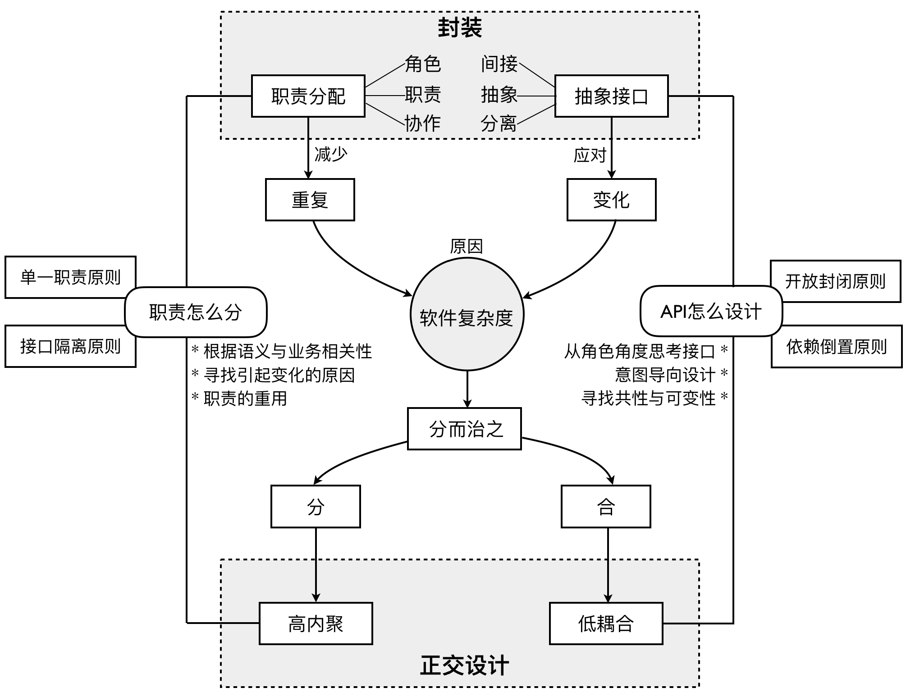
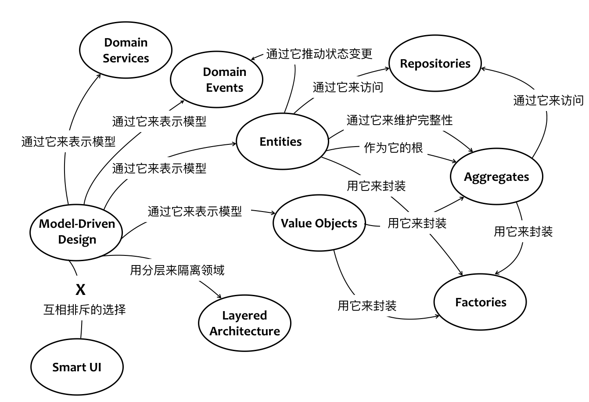

- 001 「战略篇」访谈 DDD 和微服务是什么关系？.md.html
- 002 「战略篇」开篇词：领域驱动设计，重焕青春的设计经典.md.html
- 003 领域驱动设计概览.md.html
- 004 深入分析软件的复杂度.md.html
- 005 控制软件复杂度的原则.md.html
- 006 领域驱动设计对软件复杂度的应对（上）.md.html
- 007 领域驱动设计对软件复杂度的应对（下）.md.html
- 008 软件开发团队的沟通与协作.md.html
- 009 运用领域场景分析提炼领域知识（上）.md.html
- 010 运用领域场景分析提炼领域知识（下）.md.html
- 011 建立统一语言.md.html
- 012 理解限界上下文.md.html
- 013 限界上下文的控制力（上）.md.html
- 014 限界上下文的控制力（下）.md.html
- 015 识别限界上下文（上）.md.html
- 016 识别限界上下文（下）.md.html
- 017 理解上下文映射.md.html
- 018 上下文映射的团队协作模式.md.html
- 019 上下文映射的通信集成模式.md.html
- 020 辨别限界上下文的协作关系（上）.md.html
- 021 辨别限界上下文的协作关系（下）.md.html
- 022 认识分层架构.md.html
- 023 分层架构的演化.md.html
- 024 领域驱动架构的演进.md.html
- 025 案例 层次的职责与协作关系（图文篇）.md.html
- 026 限界上下文与架构.md.html
- 027 限界上下文对架构的影响.md.html
- 028 领域驱动设计的代码模型.md.html
- 029 代码模型的架构决策.md.html
- 030 实践 先启阶段的需求分析.md.html
- 031 实践 先启阶段的领域场景分析（上）.md.html
- 032 实践 先启阶段的领域场景分析（下）.md.html
- 033 实践 识别限界上下文.md.html
- 034 实践 确定限界上下文的协作关系.md.html
- 035 实践 EAS 的整体架构.md.html
- 036 「战术篇」访谈：DDD 能帮开发团队提高设计水平吗？.md.html
- 037 「战术篇」开篇词：领域驱动设计的不确定性.md.html
- 038 什么是模型.md.html
- 039 数据分析模型.md.html
- 040 数据设计模型.md.html
- 041 数据模型与对象模型.md.html
- 042 数据实现模型.md.html
- 043 案例 培训管理系统.md.html
- 044 服务资源模型.md.html
- 045 服务行为模型.md.html
- 046 服务设计模型.md.html
- 047 领域模型驱动设计.md.html
- 048 领域实现模型.md.html
- 049 理解领域模型.md.html
- 050 领域模型与结构范式.md.html
- 051 领域模型与对象范式（上）.md.html
- 052 领域模型与对象范式（中）.md.html
- 053 领域模型与对象范式（下）.md.html
- 054 领域模型与函数范式.md.html
- 055 领域驱动分层架构与对象模型.md.html
- 056 统一语言与领域分析模型.md.html
- 057 精炼领域分析模型.md.html
- 058 彩色 UML 与彩色建模.md.html
- 059 四色建模法.md.html
- 060 案例 订单核心流程的四色建模.md.html
- 061 事件风暴与业务全景探索.md.html
- 062 事件风暴与领域分析建模.md.html
- 063 案例 订单核心流程的事件风暴.md.html
- 064 表达领域设计模型.md.html
- 065 实体.md.html
- 066 值对象.md.html
- 067 对象图与聚合.md.html
- 068 聚合设计原则.md.html
- 069 聚合之间的关系.md.html
- 070 聚合的设计过程.md.html
- 071 案例 培训领域模型的聚合设计.md.html
- 072 领域模型对象的生命周期-工厂.md.html
- 073 领域模型对象的生命周期-资源库.md.html
- 074 领域服务.md.html
- 075 案例 领域设计模型的价值.md.html
- 076 应用服务.md.html
- 077 场景的设计驱动力.md.html
- 078 案例 薪资管理系统的场景驱动设计.md.html
- 079 场景驱动设计与 DCI 模式.md.html
- 080 领域事件.md.html
- 081 发布者—订阅者模式.md.html
- 082 事件溯源模式.md.html
- 083 测试优先的领域实现建模.md.html
- 084 深入理解简单设计.md.html
- 085 案例 薪资管理系统的测试驱动开发（上）.md.html
- 086 案例 薪资管理系统的测试驱动开发（下）.md.html
- 087 对象关系映射（上）.md.html
- 088 对象关系映射（下）.md.html
- 089 领域模型与数据模型.md.html
- 090 领域驱动设计对持久化的影响.md.html
- 091 领域驱动设计体系.md.html
- 092 子领域与限界上下文.md.html
- 093 限界上下文的边界与协作.md.html
- 094 限界上下文之间的分布式通信.md.html
- 095 命令查询职责分离.md.html
- 096 分布式柔性事务.md.html
- 097 设计概念的统一语言.md.html
- 098 模型对象.md.html
- 099 领域驱动设计参考过程模型.md.html
- 100 领域驱动设计的精髓.md.html
- 101 实践 员工上下文的领域建模.md.html
- 102 实践 考勤上下文的领域建模.md.html
- 103 实践 项目上下文的领域建模.md.html
- 104 实践 培训上下文的业务需求.md.html
- 105 实践 培训上下文的领域分析建模.md.html
- 106 实践 培训上下文的领域设计建模.md.html
- 107 实践 培训上下文的领域实现建模.md.html
- 108 实践 EAS 系统的代码模型.md.html
- 109 后记：如何学习领域驱动设计.md.html
064 表达领域设计模型
Martin Fowler 在《企业应用架构模式》中讨论了在企业应用架构中表达领域逻辑的几种模式，包括事务脚本（Transaction Script）、表模块（Table Module）和领域模型（Domain Model）。
事务脚本
事务脚本模式表达一个领域场景的方式是过程式的，即将整个领域场景按照顺序分解为多个子任务，然后组合成为一个完整的过程。多数情况下，一个事务脚本会对应一个数据库事务，这是该模式名称的来由。这一命名也说明该模式虽然表现的是领域逻辑，但却是从数据库的角度来思考设计的。
如果是在面向对象语言中，可以由一个类实现事务脚本。实现方式通常有两种：一种方式是将多个相关的事务脚本放到一个类中，类的每个公开方法就等同于一个事务脚本，完成一个完整的领域场景。在公开方法的内部，可以采用 Kent Beck 提出的“组合方法”模式来改进代码的可读性，避免实现逻辑的重复。这种方式实则是以面向对象的语言行过程式设计，例如第 3 节《数据设计模型》给出的推荐朋友服务就是采用了事务脚本模式：
public class FriendInvitationService {
public void inviteUserAsFriend(String ownerId, String friendId) {
try {
bool isFriend = friendshipDao.isExisted(ownerId, friendId);
if (isFriend) {
throw new FriendshipException(String.format("Friendship with user id %s is existed.", friendId));
}
bool beInvited = invitationDao.isExisted(ownerId, friendId);
if (beInvited) {
throw new FriendshipException(String.format("User with id %s had been invited.", friendId));
}
FriendInvitation invitation = new FriendInvitation();
invitation.setInviterId(ownerId);
invitation.setFriendId(friendId);
invitation.setInviteTime(DateTime.now());
User friend = userDao.findBy(friendId);
sendInvitation(invitation, friend.getEmail());
invitationDao.create(invitation);
} catch (SQLException ex) {
throw new ApplicationException(ex);
}
}
}
另一种方式是引入命令模式（Command Pattern），每个事务脚本对应到一个类中，然后根据其通用特征抽象为公共的命令接口（或抽象类），每个封装了事务脚本的类都实现该命令接口。这一设计方式可以使事务脚本能够更好地支持扩展，若存在公共逻辑，也可以在抽象类中实现重用。虽然第二种方式运用了面向对象设计思想中的多态与继承，但针对事务脚本表达的领域逻辑而言，仍然是过程式的。
事务脚本的实现直接而简单，在面对相对简单的业务逻辑时，这种方式在处理性能和代码可读性方面都有着明显的优势。但这种过程式的设计可能会导致设计出一个庞大的服务类，又由于缺乏清晰的领域概念，随着需求的变化与增加，代码很容易膨胀。当代码膨胀到一定程度后，由于没有领域类封装边界的控制和保护，容易形成意大利面条似的代码，整个软件系统也将变得难以维护。
表模块
表模块模式是数据模型驱动设计的直观体现。数据库中的一个表对应一个表模块对象。该对象既封装了对应的领域逻辑，又包含了对表数据进行操作的方法。因此，表模块对象实则是一个容器，持有的是整个表的数据，而非数据表的一行。以订单为例，就意味着表模块对象 Orders 可以处理所有订单。为了避免表数据过大对加载性能产生影响，支持表模块模式的框架往往会为表模块对象提供延迟加载等性能优化的手段。
表面上看，表模块遵循了面向对象“将数据与行为封装在一起”的设计原则，但它同时又将访问数据库的持久化机制糅合在了一起。这种方式有些类似活动记录（Active Record）模式，但活动记录模式定义的类对应的是单个的领域对象，而不是一个容器。
ADO.NET 框架提供的 DataSet 可以很好地支持表模块模式。我们可以定义一个强类型的 DataSet 来表示表模块，也可以将 DataSet 作为表模块对象的参数传入，然后获得 DataSet 的 DataTable：
public class Orders {
private DataTable orderTable;
public Orders(DataSet ds) {
orderTable = ds.Tables["orders"];
}
public Money CalculateTotalAmount(long orderId) {}
}
Entity Framework 的 DbSet
using (var context = new AuthorContext())
{
var author = context.Authors.FirstOrDefault(a => a.LastName == "Shakespeare");
}
代码中的 Authors 就是 DbSet
相对于事务脚本，表模块对业务边界的划分更加合理，若能使用某些框架提供的表模块能力，还能显著降低实现成本。不过，正如 Martin Fowler 所说：“表模块并没有给你提供完全的面向对象能力来组织复杂的领域逻辑。你不能在实例之间直接建立关联，而且多态机制也无法工作良好。”这说明表模块模式并非纯粹的面向对象设计，它更像是为了解决关系表数据结构的存取问题而定制的模式，因为它能让领域逻辑与关系数据库的衔接变得更加简单。由于表模块对象拥有的数据基本上是自给自足的，对业务数据进行计算的操作都可以分配给它，这就避免了贫血模型的出现；但也可能从一个极端走向另一个极端，违背了单一职责原则，导致一个表模块对象承担的职责过于臃肿。
领域模型
领域模型是合并了行为和数据的领域对象模型，这说明领域模型模式满足了面向对象的设计原则。普遍认为，良好的面向对象设计可以更好地应对复杂的业务逻辑，通过一张相互协作的对象网来表达领域模型，也是领域驱动设计推崇的做法。
Martin Fowler 在《企业应用架构模式》中将领域模型分为两种风格：
- 简单领域模型：几乎每一个数据库表都与一个领域对象对应，通常使用活动记录实现对象与数据的映射。这实际上是前面讲解的数据模型驱动设计的设计建模方式。
- 复杂领域模型：按照领域逻辑来设计对象，广泛运用了继承、策略和其他设计模式，通常使用数据映射器实现对象与数据的映射。这实际上是领域驱动设计推崇的设计建模方式。
由于领域模型强调对象要“合并行为和数据”，这就意味着需要避免贫血模型，我在《领域模型与结构范式》一节中已经提到了贫血模型的不足。贫血固然是坏味道，但若领域对象变得过于臃肿，依旧是一个坏味道。归根结底，还是职责分配是否合理的问题。通常，在分配职责时，首先需要判断该职责到底属于架构逻辑分层的哪一层！将 UI 交互、数据库访问或其他外部资源访问的逻辑错误地分配给领域层，是最不能容忍的职责分配错误。在确定了属于领域逻辑的范畴之后，再基于对象拥有的信息、承担的角色去考虑。若仍然不能做出正确决策，就应该考虑职责的重用和变化，这就回到了“高内聚低耦合”这个根本的原则上。
其实分还是不分，是一个哈姆雷特似的问题。还是让我们听听 Martin Fowler 的意见：
分离具体使用的行为所带来的问题是：会产生冗余代码。从订单类中分离出来的行为很难被定位，因此开发者很可能因为找不到，而自己写一段完成相同功能的代码。冗余代码容易增加软件的复杂性和不一致性，但我发现对象臃肿化的发生率远较预想中的低。确实发生时也很容易发现和修正。因此我的建议是不要分离针对具体使用的行为，将它们放到本来应当放的对象中。对象臃肿发生后再进行修正。
Martin Fowler 的意见是优先遵循“数据与行为封装在一起”的设计原则，只有当对象变得臃肿了，再考虑如何分离对象的行为。这是重构大师实证主义的态度。若不满足于这等类似“事后诸葛亮”的解释，可以参考我对面向对象设计原则的整体总结，如下图所示：

我认为，软件复杂度的诱因主要来自重复与变化。要解决这种复杂度，就需得遵循“分而治之”的思想。分，就需得满足高内聚，努力将关联性强的内容放在一起，这就牵涉到“职责怎么分”这个命题。合，是必然的，但应尽量保证关联对象之间的耦合度降到最低，满足低耦合，本质上就是要考虑“API 怎么设计”。满足高内聚低耦合原则的设计可以称为是“正交设计”。若能从角色、职责与协作三个方面来考虑职责分配，就可以有效地减少重复；从间接、抽象与分离三个方面去抽象接口，就能够更好地应对变化。只有把重复与变化控制住了，才能降低软件复杂度。于是，围绕着软件复杂度并结合这些设计原则形成了“以始为终”的完美闭环。
**说明：**正交设计由袁英杰提出，若希望了解更多正交设计的内容，可以阅读袁英杰的文章《变化驱动：正交设计》和《正交设计，OO与SOLID》。若希望了解如何在项目中实践正交设计的四个策略，可以参考刘光聪的文章《实战正交设计》。
当现实照进理想
理想的对象模型都是完美的，现实的对象模型却各有各的不幸。当我们在谈论对象时，常常以一种不带烟火气的神仙方式，不考虑外部资源、依赖、性能、数据一致性这些脏事儿和破事儿，就好似计算机是自给自足的，对象从鸿蒙之初被陆续创建出来，然后连成了一张可以通达世界任何地方的对象网络，调用者可以自由使用，仿佛它们与生俱来唾手可得。
然而，对象如人，也是要吃五谷杂粮的。不是神仙，就有生老病死；能力不同，就会嫉妒不平；性格迥异，就会相爱相杀。作为创造这些对象的我们，就像上帝一般可以操纵它们的生死，但若要这个由对象组成的世界向着“善”的方向发展，就必须扫清这个世界的不平之事。
首先是对象的生老病死，这就牵涉到对象的持久化。内存是这些对象的运行空间，但我们需得具有类似掌控西部世界那样的能力，可以让系统暂停、重启，这就需要为系统中每个对象的数据提供一份不易丢失的副本。这并非业务因素带来的制约，而是基础设施产生的局限，这就引入了领域对象模型的第一个问题：领域模型对象是如何与数据库协作的？
每个对象生而平等，但天赋却不相同，这就导致它们掌握的信息并不均等，对象之间需要互通有无。如果所有对象组成一张四通八达的图，就能如蛛丝一般畅通地传递着信号，从 A 对象到达 B 对象轻而易举，获取对象的区别仅在于途经的网络节点数量。可惜现实并非如此，内存资源是昂贵的，加载不必要对象带来的性能损耗也不可轻视，这就引入了领域对象模型的第二个问题：领域模型对象的加载以及对象间的关系该如何处理？
每个对象自有性格，调用者对它们各有所好。有的对象具有强烈的身份意识，处处希望彰显自己的与众不同；有的对象则泯然众人矣，默默地提供重要的能力支撑。当它们被加载到内存中时，就对管理和访问提出了不同的要求，这并非堆与栈的隔离可以解决的，若不加以辨别与控制，就无法做到和平共处，这就引入了领域对象模型的第三个问题：领域模型对象在身份上是否存在泾渭分明的差别？
总有一些对象并不体现领域概念，而是展现操作的结果，不幸的是，这些操作往往是不安全的，它会带来状态的变更，而状态变更又该如何传递给其他关心这些状态的对象呢？理想的对象图并不害怕状态的变迁，因为一切变化都可以被准确传递，且无需考虑彼此之间的依赖。然而现实并非如此，如何安全地控制状态变化，又如何在侦听这种变化的同时，不至于引入多余的依赖，这就引入了领域对象模型的第四个问题：领域模型对象彼此之间如何能弱依赖地完成状态的变更通知？
领域模型模式并没有给出解决这些问题的方案，面向对象的设计原则与模式对此也显得力有未逮。对象模型的理想与现实出现了不如人意的差别，为此，领域驱动设计定义了相关的设计要素，针对这些问题给出了自己的答案：
- 问题一：领域模型对象是如何与数据库协作的？领域驱动设计引入资源库（Repository）模式来隔离领域逻辑与数据库实现，并将领域模型对象当做资源，将存储领域对象的介质抽象为仓库。
- 问题二：领域模型对象的加载以及对象间的关系该如何处理？领域驱动设计引入聚合（Aggregate）来划分对象之间的边界，在边界内保证所有对象的一致性，并在对象协作与独立之间取得平衡。
- 问题三：领域模型对象在身份上是否存在泾渭分明的差别？领域驱动设计区分了实体（Entity）与值对象（Value Object），避免了不必要的身份跟踪与并发控制。
- 问题四：领域模型对象彼此之间如何能弱依赖地完成状态的变更通知？领域驱动设计引入了领域事件（Domain Event），通过发布者/订阅者来发布与订阅领域事件。
显然，理想的对象图模型希望用对象阐释现实世界，但受限于运行条件，很难到达对象联邦的“理想国”，需要进行设计上的约束，引入资源库、聚合、实体与值对象、领域事件等设计要素，形成了妥协后的领域设计模型。现实世界、对象图模型与领域设计模型三者之间的关系如下图所示：
如果说领域分析建模是实现了从现实世界到对象图模型的映射，那么领域设计建模就是在这个映射关系上针对对象图模型施加设计约束，从而解决将现实照进理想时出现的问题。设计约束引入的设计要素，就是领域驱动设计给出的设计模式。让我们再一次审视 Eric Evans 给出的这幅图：

这幅图充分说明了这些设计要素在领域设计模型中承担的作用。首先，Eric Evans 规定只能是实体（Entity）、值对象（Value Object）、领域服务（Domain Service）与领域事件（Domain Event）表示模型。这样的约束就可以避免将太多的领域逻辑泄漏到领域层外的其他地方，例如应用层或基础设施层。其次，图中明确提及使用聚合（Aggregate）来封装实体和值对象，并维持边界内所有对象的完整性。若要访问聚合，需要通过资源库（Repository）来访问，这就隐式地划定了边界和入口，若能做到这一点，对聚合内所有类型的领域对象都可以得到有效的控制。当然，若牵涉到复杂或可变的创建逻辑，还可以利用工厂（Factory）来创建聚合内的领域对象。最后，若牵涉到实体的状态变更（注意，值对象是不牵涉到状态变更的），则通过领域事件来推动。
说明：由于实体、值对象、领域服务与领域事件都是用以表示领域模型的，为了区分它们与其他设计要素，我将它们统一称为领域模型对象。
领域模型对象的哲学依据
（图片来源于网络）
既然是对领域设计模型的表达，而领域设计模型又是对现实世界的一种抽象，说明这些模型对象就是对要解决的现实世界领域问题的一种描述。领域驱动设计是以何为根据将其分为这样的四类对象呢？我从亚里士多德的范畴学说中寻找到了理论的依据。范畴在亚里士多德的逻辑学中，原文为 kategorein（动词）或 kategoria（名词），他常说“kategorein ti katatinos”，翻译过来就是“assert something of something（述说某物于某物）”。一个范畴其实就是一个主语 - 谓语的结构，其中主语就是被谓语（Predication）描述的主体。
亚里士多德将范畴分为十类：实体、数量、性质、关系、地点、时间、形态、状况、活动（主动）、遭遇（被动）。这十类范畴说明了我们人类描绘事物的十种方式，采用主语—谓语结构，如下描述：
- 这是人（实体）
- 这是三尺长（数量）
- 这是白色（性质）
在亚里士多德的哲学观中，实体是描述事物的主体，其他范畴必须“内居”于一主体。所谓“内居”，按亚里士多德自己的解释是指不能离开或独立于所属的主体。既然有这种“内居”的主从关系，整个范畴就有了两重划分。实体是现实世界的形而上学基础，而其它范畴则成为实体的属性，需要有某种实体作为属性的基础。
亚里士多德企图通过自己的逻辑学来解释和演绎我们生存的这个世界。那么在软件领域，要解释和演绎的不正是我们要解决的问题域世界吗？从这个角度讲，二者有其相通之处。于是，我们可以利用软件术语来进一步阐释亚里士多德划分的这十个范畴。其中，实体可以理解为是我们要描绘事物的主体，数量、性质、关系、地点、时间与形态都是该主体的属性，状况即状态，它会因为主动发起的活动或被动的遭遇导致实体属性的变化，状态的变迁。至于导致这种变化的活动与遭遇，若为主动，则对应于命令似的业务行为，至于被动，则是该主动行为产生的结果。至于属性在实体中的“内居”，其实就是封装思想的体现。
这样，我就为领域驱动设计中的四种领域模型对象找到了哲学依据：
- 实体：实体范畴，是谓语描述的主体。它包含了其他范畴，包括引起属性变化和状态迁移的活动。
- 值对象：为主体对象的属性，通常代表数量、性质、关系、地点、时间或形态。
- 领域事件：封装了主体的状况，代表了因为主动活动导致的状态变迁产生的被动遭遇，即过去发生的事实。
- 领域服务：如前所述，其他范畴必须“内居”于一主体，若活动与遭遇代表的业务行为无法找到一个主体对象来“内居”，就以领域服务作为特殊的主体来封装。
在领域设计建模阶段，我们就是要学会将领域分析模型中的领域概念对象转换为领域设计模型中的领域模型对象。我们需要有一种世界创造者的气度，从哲学的角度去思考并做出判断。寻找主体，就是在辨别实体；确定主体的属性，就是在辨别值对象，且清晰地体现了二者的职责分离与不同粒度的封装；确定主体的状况，就是在辨别领域事件；最后，只有在找不到主体去封装领域逻辑时，我们才会考虑定义领域服务。
分享交流
我们为本课程付费读者创建了微信交流群，以方便更有针对性地讨论课程相关问题。入群方式请到第 6-1 课末尾添加小编的微信号，并注明「DDD」。
阅读文章过程中有任何疑问随时可以跟其他小伙伴讨论，或者直接向作者提问（作者看到后抽空回复）。你的分享不仅帮助他人，更会提升自己。